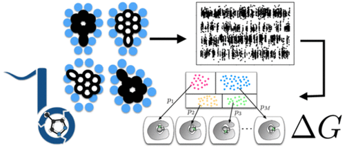

Introduction¶
BLUES is a python package that takes advantage of non-equilibrium candidate Monte Carlo moves (NCMC) to help sample between different ligand binding modes.
Github¶
Github Check out our Github repository.
Issue If you have any problems or suggestions through our issue tracker.
Fork To contribute to our code, please fork our repository and open a Pull Request.


Publication¶
Binding Modes of Ligands Using Enhanced Sampling (BLUES): Rapid Decorrelation of Ligand Binding Modes via Nonequilibrium Candidate Monte Carl
Samuel C. Gill, Nathan M. Lim, Patrick B. Grinaway, Ariën S. Rustenburg, Josh Fass, Gregory A. Ross, John D. Chodera , and David L. Mobley
The Journal of Physical Chemistry B 2018 122 (21), 5579-5598
Publication Date (Web): February 27, 2018
Abstract
Accurately predicting protein–ligand binding affinities and binding modes is a major goal in computational chemistry, but even the prediction of ligand binding modes in proteins poses major challenges. Here, we focus on solving the binding mode prediction problem for rigid fragments. That is, we focus on computing the dominant placement, conformation, and orientations of a relatively rigid, fragment-like ligand in a receptor, and the populations of the multiple binding modes which may be relevant. This problem is important in its own right, but is even more timely given the recent success of alchemical free energy calculations. Alchemical calculations are increasingly used to predict binding free energies of ligands to receptors. However, the accuracy of these calculations is dependent on proper sampling of the relevant ligand binding modes. Unfortunately, ligand binding modes may often be uncertain, hard to predict, and/or slow to interconvert on simulation time scales, so proper sampling with current techniques can require prohibitively long simulations. We need new methods which dramatically improve sampling of ligand binding modes. Here, we develop and apply a nonequilibrium candidate Monte Carlo (NCMC) method to improve sampling of ligand binding modes. In this technique, the ligand is rotated and subsequently allowed to relax in its new position through alchemical perturbation before accepting or rejecting the rotation and relaxation as a nonequilibrium Monte Carlo move. When applied to a T4 lysozyme model binding system, this NCMC method shows over 2 orders of magnitude improvement in binding mode sampling efficiency compared to a brute force molecular dynamics simulation. This is a first step toward applying this methodology to pharmaceutically relevant binding of fragments and, eventually, drug-like molecules. We are making this approach available via our new Binding modes of ligands using enhanced sampling (BLUES) package which is freely available on GitHub.
Theory¶
Suggested readings:
| [1] | Best Practices for Foundations in Molecular Simulations : v1.0. Efrem Braun, Justin Gilmer, Heather B. Mayes, David L. Mobley, Jacob I. Monroe, Samarjeet Prasad, Daniel M. Zuckerman. |